Siril guide
Nebula is quite challenging to process as it usually takes up a lot of space, making it difficult to align the background and get an overall idea of the object's brightness. However, Eastern Veil Nebula is a simple object - its contrast makes it easy to get color and detail.
Each instrument will be separated. And each will be marked by difficulty:
🟩(Easy)- does not depend on the type of DSO, taste or other factors. Can be repeated identically.
🟧(Moderate)- partly depends on the object, your sense of taste also affects at it, it
is advisable to select the parameters yourself.
🟥(Hard)- highly depends on the image quality, DSO type, your taste, the availability of
external lighting, the quality of your screen and many additional factors. It is not
recommended to completely repeat the process in these tools; you need to select the parameters yourself.
Please note that this guide shows the possibilities of using various tools, but this does not mean that you should completely copy my processing method. Experiment, swap tools, repeat BGE or color saturation several times - complete freedom of action. So you will most likely be able to process it better than me ^_^
Let's enable Autostretch:

Quite often you will notice that the entire image is very green or red.
In order to see something, you need unchain channels.

Now we need a crop in order to remove stacking artifacts
(they are close to the image borders), and also to make the galaxy better visible.
Hold down the left mouse button, draw a rectangle, center it on the galaxy and press the right button.
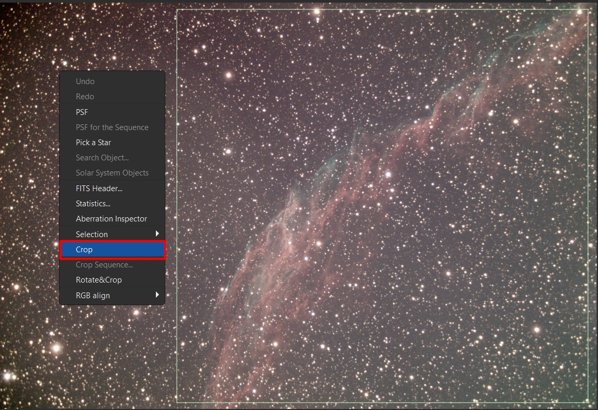
Color calibration allows you to adjust the color of the entire image.
This will also correct any green or red color you may have seen in the beginning.
Let's use PCC (Photometric Color Calibration):


Find your object (if you don't know what it's called, use
Google or
Astrometry).
Enter the focal length and pixel size (for this object 1284.7mm and 4.63μm).
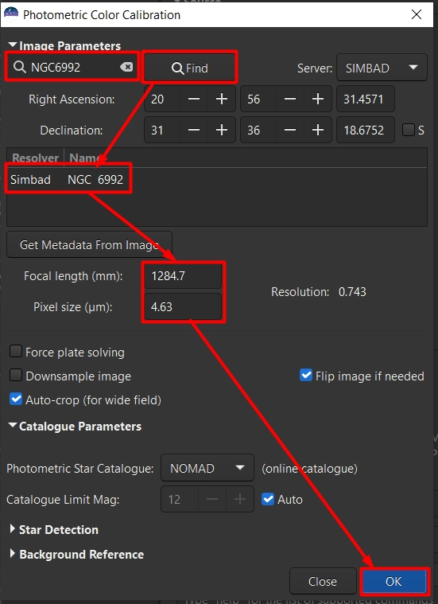
Wait for the PCC to complete its work:
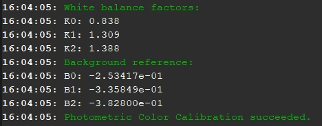
Now let`s run Starnet:


Check the linear image pre-stretch checkbox:

It will take some time...

Stretching is the second most important task in all processing.
This is where you get all the detail that makes astrophotography so interesting.
First we need to do a preliminary stretch to see the object:

Select the logarithmic scale check box and move local stretch intensity slider to the max (15.0):
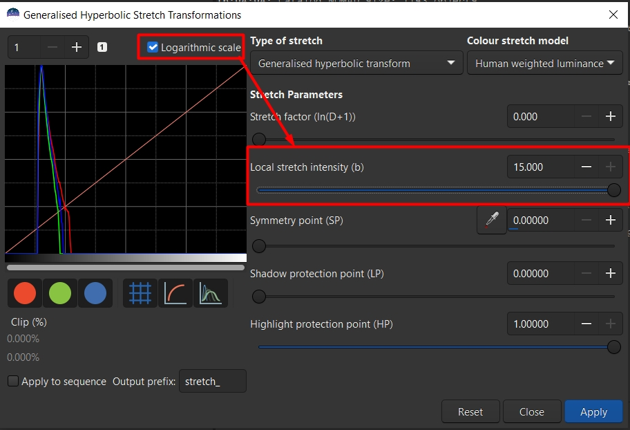
Now, by changing the Stretch factor you need to shift the peak of the histogram two squares to the right:
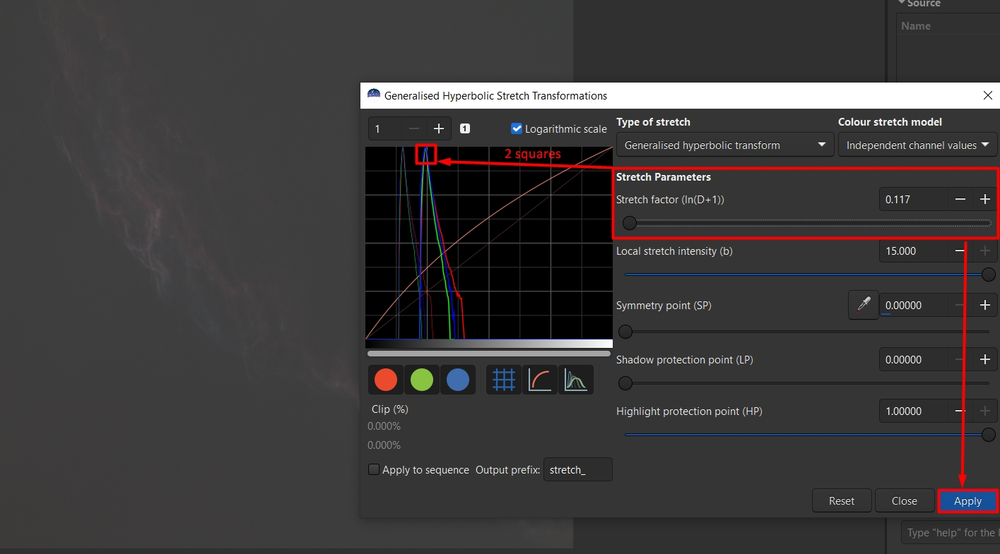
Now let`s make background darker. Click on the area where the histogram peak is located.
Afterwards, move the Highlight protection slider so that it is identical to the
Symmetry point slider. Also set local stretch intensity to max:
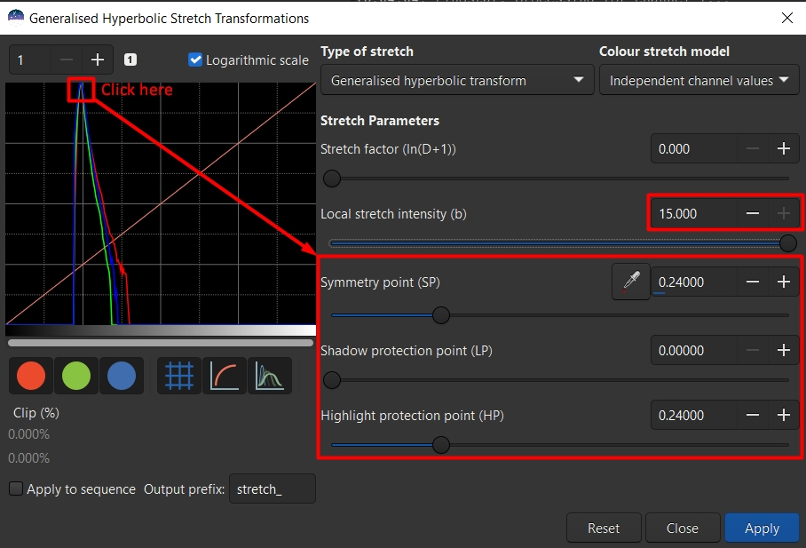
Now, changing the linear stretch, shift the histogram to the left until there is a small gap left:

Now let's repeat the Stretch.
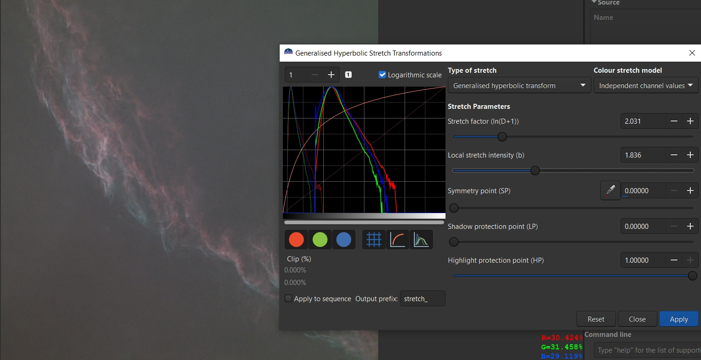
This tool allows you to align and make the background more uniform:

Click Generate to create a grid of samples:

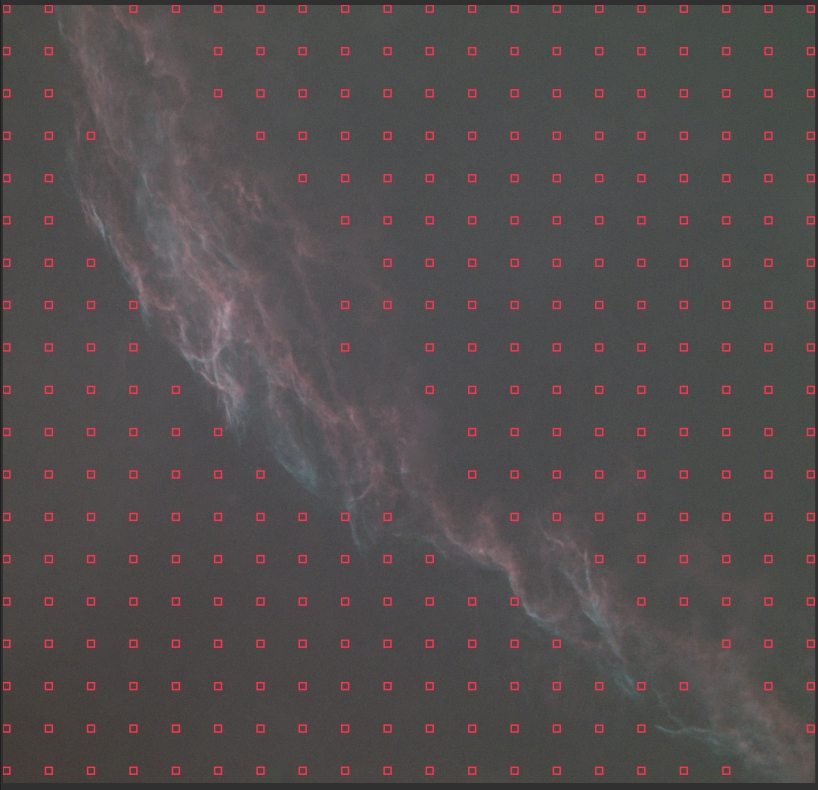
Now, by clicking the left mouse button to create a
sample and the right mouse button to delete it, we need to edit the grid
so that the samples only go to the background and not to the object:
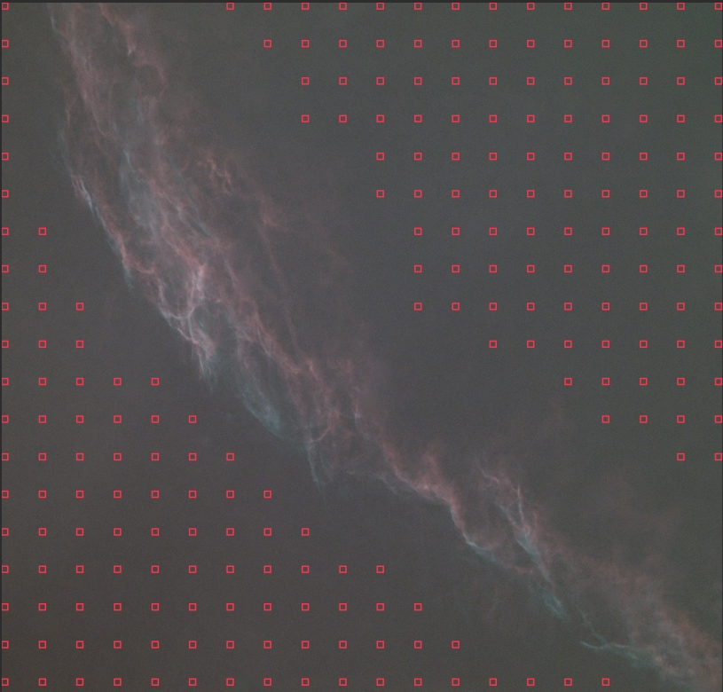
When you have edited the grid, click Compute background and Apply:

Now the background looks smooth:
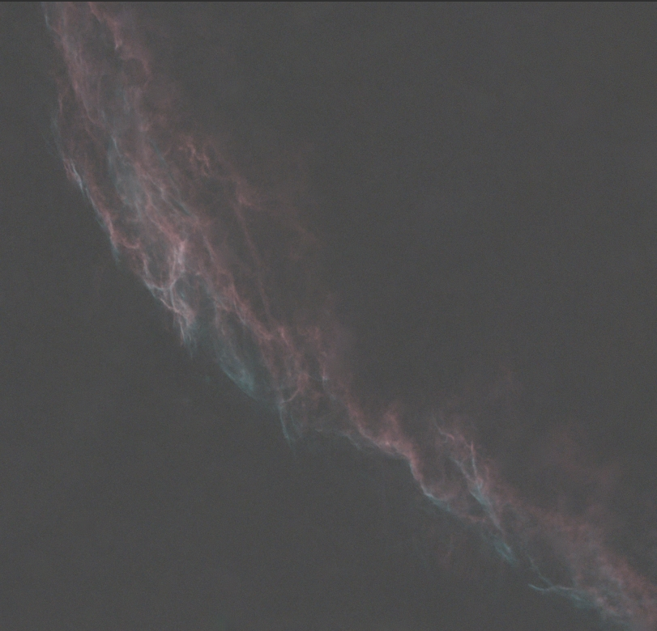
Now let`s again do several stretch and background darkenings. At stretch you must get as much detail as possible,
but you must not overexpose the nebulae, especially the brightest parts. If you see that the nebulae parts
are too bright, move the local stretch intensity slider to the right until it becomes less bright:
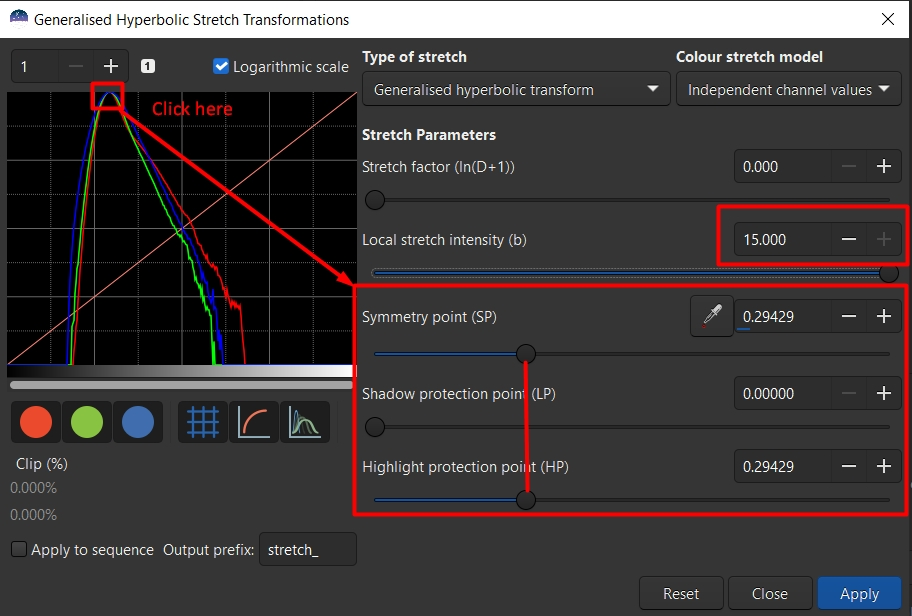
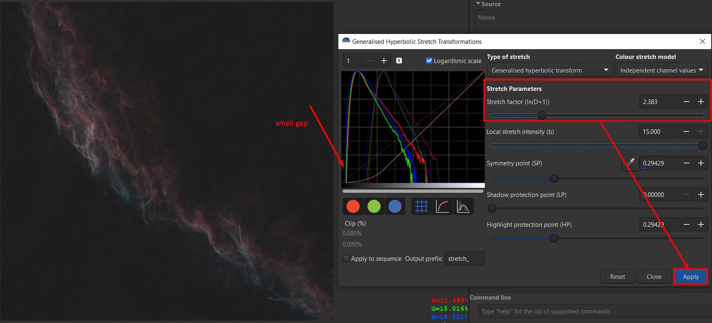
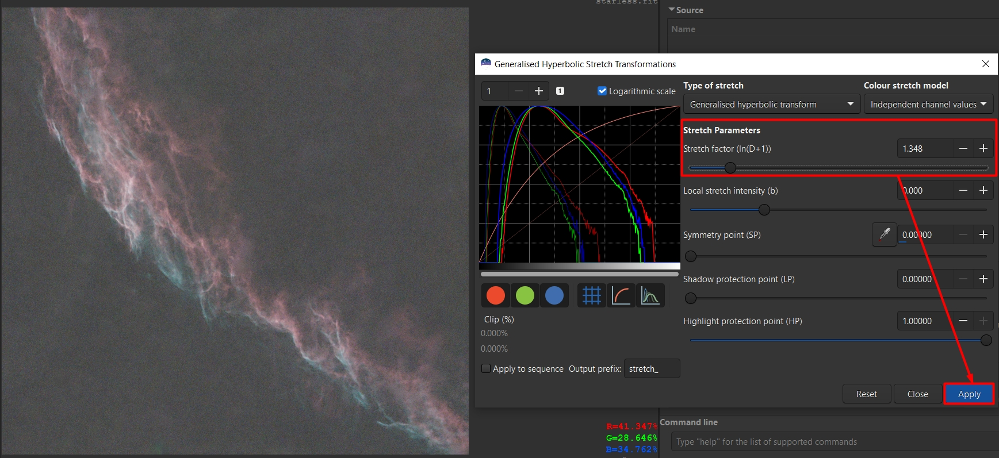
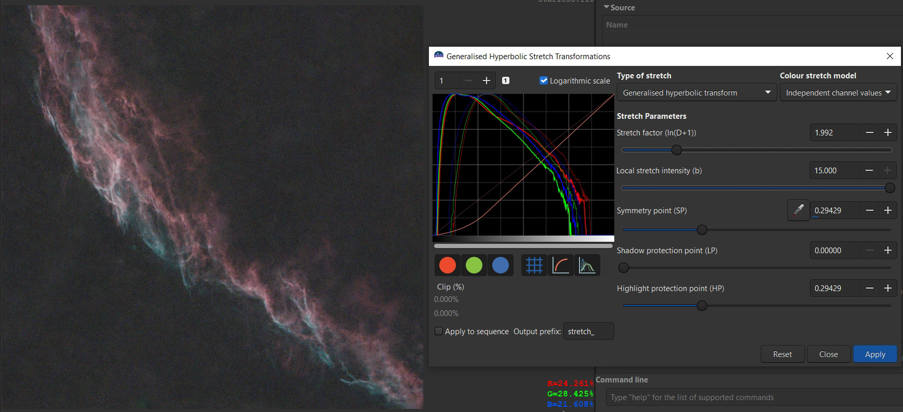
This tool allows you to get even more detail:

If you overdo it, the background will become noisy too.
Adjust the tiles grid size until you get more detail without
artifacts or looking too unnatural:
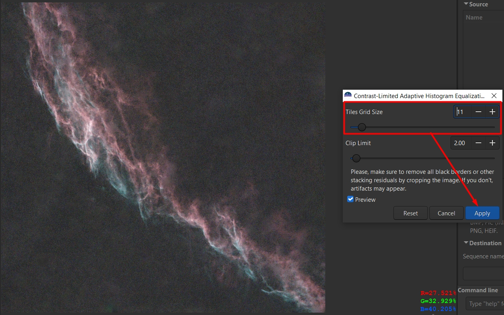
Depending on the image quality, the amount of noise may vary.
However, using a noise removal program, it is possible to obtain
more detail than without it. To do this, save the image as starless.tif
32 bit (.TIFF format). Then open the program, drag-and-drop the image, in
the settings on the right side, select Several noise and on Model Preference.
Press save.
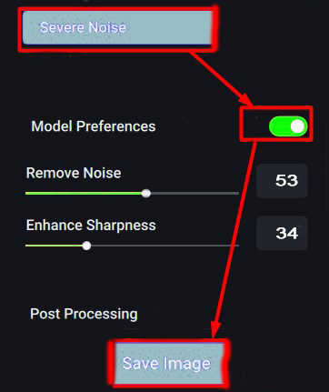
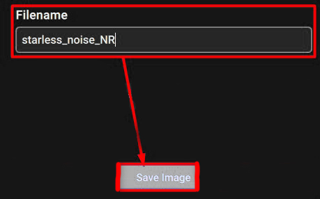